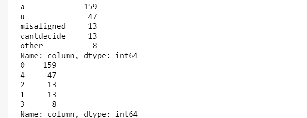
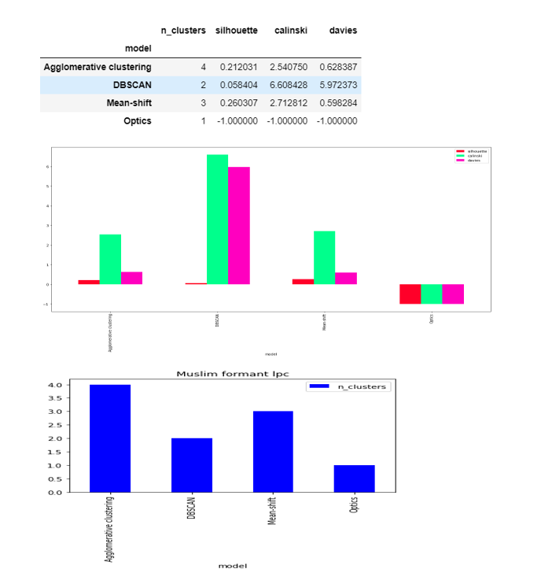
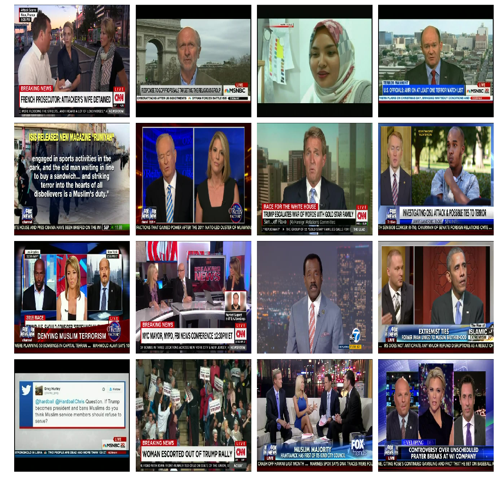

Lets get started with week-3
My mentor and I decided the tasks for this week given as :
- Extract the formants
- Extract all the audio features and apply the algorithms
- Apply the grid search method in all the algorithms used in the previous work
- Apply all the algorithms with grid search in the image clustering (-extended script)
- Apply image preprocessing and feature extraction techniques and apply clustering models
1. Formant Extraction
A formant is defined as the concentration of a acoustic energy around a particular frequency in the speech wave. Roughly there is one formant in each 1000Hz of frequency band. See the image blue the red-lines show the formants , there are roughly 4 formants that are visible. The darker the formanr is the more energy it contains.
1.1 Extraction of the formants
1.1.1 Case-1: Formants-LPC
To find the best matching system we use a method of analysis called Linear Prediction.Linear prediction models the signal as if it were generated by a signal of minimum energy being passed through a purely-recursive IIR filter.
Firstly I started with extracting the starting and ending time of the vowel sound from the audio using the textGrid file (please see week-2 blog to learn how to extract). I followed the matlab code for the extraction of the formants from the vowel sound
The Two pre-processing steps are applied before lpc
- a) Windowing the speech using hamming window
- b) Applying the pre-emphasis filter
To extract the lpc , we have to pass the order the thumb rule for finding the order is order =2+(samling frequency/1000)
Lpc function returns the prediction polynomial. To find the formant frequencies from the filter, we need to find the locations of the resonances that make up the filter. This involves treating the filter coefficients as a polynomial and solving for the roots of the polynomial.
1.1.2 Case -2 Python-praat,
I used the praat-python library to extract the formants
parsel-mouth documentation Link
Install using: pip install praat-parselmouth
Note that this library is pythonic interface to the internal Praat code so the same functions are used to extract the fromants in both praat-script file and the python file ,I used python to extract the formants at three points:
a)point-20 i.e 20% from the start of the vowel sound , calculated using the formula start + ((end-start)*0.2)
b)point 50 i.e 50% from the start of the vowel sound , calculated using the formula start + ((end-start)*0.5)
c)point 80 i.e 80% from the start of the vowel sound , calculated using the formula end - ((end-start)*0.2)
Sound_to_Formant_burg function was used to extract the formants
Sound__To_Formant__burg_ documentation Link
The algorithm that is used by the praat is :
The sound will be resampled to a sampling frequency of twice the value of Maximum formant. After this, pre-emphasis is applied .For each analysis window, Praat applies a Gaussian-like window, and computes the LPC coefficients .The number of "poles" that this algorithm computes is twice the Maximum number of formants that's why you can set the Maximum number of formants to any multiple of 0.5).
The python file for the formant extraction can be found at :
Formant Extraction.py LinkThe jupyter notebook can be found here at : Formant Extraction ipynb link
2 Data visualization
It is best to visualize the distribution of the data before applying the clustering algorithms
Fig-1 shows the distribution of the muslim-data, here we have 5 labels.
To visualize the data I plotted with the combinations between the three formants , pca transformed and the tsne transformed of all the formants.
The label distribution of the dataset is :
Formant-20 Descripton from figure
Label 0 (red)represents "a" sound while label 4(cyan) represents the "u" sound. For the formant 1 and 2 the red and cyan is less scattered. All the labels are not much seperated from each other, they all are overlapping and are highly densed.
Out of all the formants , formant-1 is playing an important role as the clusters are less scattered when formant-1 is involved.
t-SNE representation is very much scattered.
Formant-50 Descripton from figure
In this the label-4(cyan) is less scattered than it was in the formant-20 in all the representations except t-SNE.
The label-0(red) is more densely clustered in the formant1-formant2 and PCA transformation.
t-SNE representation is very much scattered.
Formant-80 Descripton from figure
t-SNE representation is very much scattered and to some extent PCA is also more scattered as compared to formant20 and formant50.
Formant-lpc Descripton from figure
t-SNE and PCA representation is very much scattered
Ideology 200 ms dataset
The label distribution of the dataset is :
Formant-20 Descripton from figure
Label 0 (red)represents "ai" sound and Label 1(blue) represents "ee" sound.
Label 2 does not represent anything here.
For all the representations the data is highly densed and no two significant clusteres are visible. In the formant 2 and formant 3 figure the label-2(blue) is less scattered.

Formant-50 Descripton from figure
For all the representations the data is highly densed and no two significant clusteres are visible. In the formant 2 and formant 3 figure and PCA tranformation the label-2(blue) is less scattered.
Formant-80 Descripton from figure
The label-2 is more clustered in formant1 -formant 2 and formant1-formant3.
Formant-lpc Descripton from figure
The Label-1(blue) is less scattered in formant1-formant2 and in formant1 and formant3.
Ideology five word dataset
The label distribution of the dataset is :

Formant-20 Descripton from figure
The label 1(blue) respresents "ai" sound , label 2(green) represents "ee" and label 0(red) reprsents those samples which are to be deleted(misaligned)
I kept label-3 in the visualization just to see how it is distributed.
In this the label 2(green) is visible as a distinct cluster and thus is less scattered in all the representations.
Formant-50 Descripton from figure
In this the label 2(green) is visible as a distinct cluster and thus is less scattered in all the representations also label 1(blue) is more densed.
Formant-80 Descripton from figure
In this the label 2(green) is scattered compared to above two representations.
Formant-lpc Descripton from figure
In this the label 2(green) is visible as a distinct cluster and thus is less scattered in all the representations
3 . Audio Clustering Results
The python file code for the audio clustering can be found here--> Clustering python file Link
The jupyter notebook code for the audio clustering can be found here--> Clustering jupyter notebook Link
To obtain the results this week I hypertune the machine learning models using grid search. In grid search we pass various different parameters for the model then the grid search internally make the combinations of the parameters and return us the best perfroming set of parameter. It find the best parameter based on the scoring function . I used the silloutte coefficient as a scoring function.
1)K Means (requires number of clusters)
2.Agglomerative Clustering
3)Birch (requires number of clusters)
4)DBSCAN
5)Mean shift
6)Optics
7)Gaussian Mixture(requires number of clusters)
The only change is I removed the number of cluster parameters from the agglomerative clustering thus now we have Agglomerative ,DBSCAN,Optics and mean shift as the clustering algorithms which do not have any pre-defined number of cluster parameters. We will be analysing the number of clusters in these four algorithms mainly
For understanding the evaluation metrics , please see the week-2 blog post
Lets start with the ideology 200 ms results
Formant-20
DBSCAN,Mean-shift and Agglomerative clustering are able to to find the two clusters , while OPTICS found 3.
The score are less and close to zero in except FM and accuracy.
Formant-50
DBSCAN and Agglomerative clustering are able to to find the two clusters , while OPTICS found 3 and Mean-shift 4.
The score are less as compared to formant-20 and close to zero in except FM and accuracy.
Formant-80
DBSCAN ,OPTICS , Mean-shift and Agglomerative clustering are able to to find the two clusters.
The score are less and close to zero in except FM and accuracy.
Formant-lpc
DBSCAN ,OPTICS , Mean-shift and Agglomerative clustering are able to to find the two clusters.
The score are less and close to zero in except FM and accuracy.
Ideology five word results
Formant-20
DBSCAN and Agglomerative clustering are able to to find the two clusters , while OPTICS found 3 and Mean-shift 4.
The score are less as compared to formant-20 and close to zero in except FM.
Formant-50
DBSCAN , Agglomerative clustering and OPTICS are able to to find the two clusters , while Mean-shift found 3.
The score are very less as compared to formant-20 and close to zero in except FM .
Formant-80
DBSCAN , Agglomerative clustering and OPTICS are able to to find the two clusters , while Mean-shift found 4.
The score are very less as compared to formant-20 and close to zero in except FM .
Formant-lpc
DBSCAN , Agglomerative clustering and OPTICS are able to to find the two clusters , while Mean-shift found 4.
The score are very less as compared to formant-20 and close to zero in except FM .
Muslim results
Formant-20
DBSCAN , Agglomerative clustering, Mean-shift and OPTICS are able to to find the two clusters. This shows that it is somewhere clustering it around two sounds.
The score are very less as compared to formant-20 and close to zero in except FM .
Ideally there the algorithms should predict the 5 clusters
Formant-50
None from DBSCAN , Agglomerative clustering, Mean-shift and OPTICSc lustering algorithms are able to predict five clusters
The score are very less as compared to formant-20 and close to zero in except FM .
Formant-80
DBSCAN , Agglomerative clustering, and OPTICS are able to to find the two clusters. Mean shift found four clusters that is close to five.
The score are very less as compared to formant-20 and close to zero in except FM .
Formant-lpc
DBSCAN , Agglomerative clustering, Mean-shift and OPTICS are able to to find the two clusters. This shows that it is somewhere clustering it around two sounds.
The score are very less as compared to formant-20 and close to zero in except FM .
4 Image clustering
The python file code for the audio clustering can be found here--> Image Clustering python file Link
4.1 Results of Muslim dataset
4.1.1 Agglomerative Clustering
It returned total 4 labels , label 0 being 239 images, the following images came under label 0(almost all)
4.1.1 DBSCAN
It returned total 2 labels , label 0 being 137 images and label -1 being 105 images , the following images came under label 0(almost all)
Label 0
Label- -1
4.1.3 Mean shift clustering
It returned total 3 labels , label 1 being 240
Label 1
4.1.4 Optics returned all images as a one label
4.2 Results of Ideology dataset
4.2.2. Agglomerative clustering
The results are quite interesting in ideology case , in the agglomerative clustering the results are like this,2168 clusters is a lot < /p>
I had a text file having some predefined clusters, which we want as a result from our clustering model
Starting with flyn , I made a loop to find the cluster label resulted from the flyn images , and for each label returned I loop through all the images having that cluster label to check the clustering distribution of that label i.e whether it has only flyn images or some other images.
It is interesting to see that 13 clusters labels were returned having flyn images , but in all the 13 clusteres there were only flyn images
Looking for the fox images, there were 12 clusters found and the distribution was like this
9 clusters is formed for khweis which were like this
2 clusters is formed in pbs like this :
1 cluster for ryan is formed
18 clusters are formed for trump